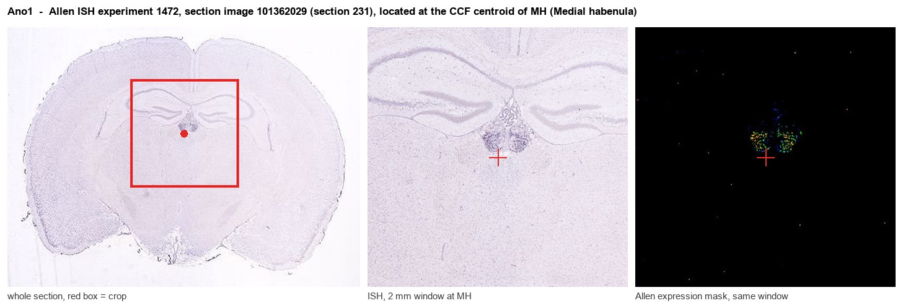
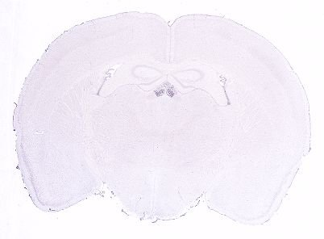
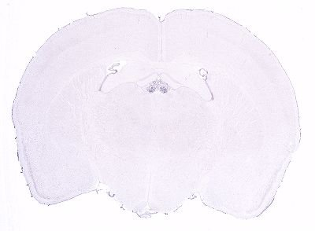
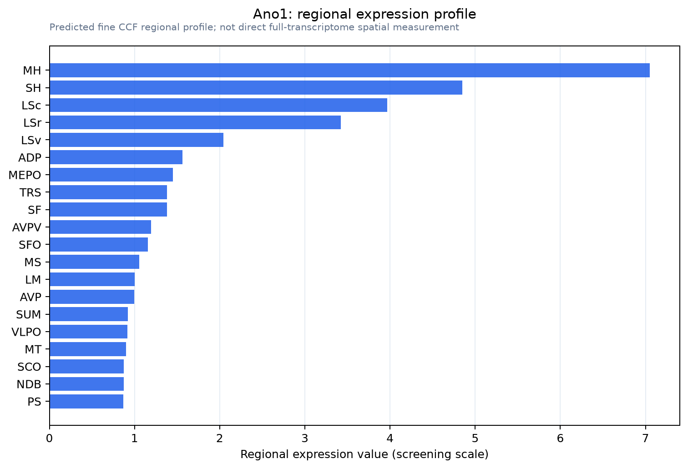

Ano1
Anoctamin-1 (Transmembrane protein 16A)
Spatial tier: STRICT_EXCLUSIVE · Class: ION_CHANNEL · Top region: MH (Medial habenula) · Positive regions: 5/554
48.2Discovery Score
46.4Targetability Score
CEvidence grade C
What this means: Ano1: predicted fine-region profile is strict-exclusive, with 5 positive regions out of 554 (limit 12); direct spatial validation is required.
Function in MH: evidence, prediction, innovation
- Gene function
- Ano1 encodes TMEM16A, a calcium-activated chloride channel of the anoctamin family. Rising intracellular Ca2+ opens the pore and Cl- moves down its electrochemical gradient, which drives secretion in epithelia and shapes membrane potential, afterpotentials and firing rate in excitable cells. It is a classic target in airway epithelium, interstitial cells of Cajal and nociceptors.
- Region function
- The medial habenula is an epithalamic relay whose cholinergic/substance P neurons project almost exclusively through the fasciculus retroflexus to the interpeduncular nucleus. This MHb-IPN axis sets nicotine aversion and withdrawal, fear memory expression, anxiety and negative affect.
- Published in this region
- direct Cho et al. 2020 (EMBO Rep) used RNAscope, immunohistochemistry and slice recording to show that TMEM16A expression in the mouse brain is essentially restricted to the medial habenula; conditional ablation in ChAT+ mHb neurons flattened the afterhyperpolarization slope of spontaneous action potentials and produced anxiety-related behaviour. Song et al. 2022 (Behav Brain Res) found anhedonia-like behaviour after the same ChAT-restricted deletion, and Kim et al. 2026 (Mol Brain) reported early-onset schizophrenia-like phenotypes in mHb TMEM16A conditional knockouts.
- Predicted function
- Prediction: TMEM16A is the Ca2+-dependent chloride brake that stabilises the tonic pacemaking of ventral MHb cholinergic neurons, converting Ca2+ entry during each spike into a repolarising Cl- current. Removing it should raise MHb firing rate and ACh/glutamate output onto the IPN; pharmacological block (Ani9, T16Ainh-A01) should mimic the anxiety and anhedonia phenotypes, whereas potentiating TMEM16A should blunt nicotine withdrawal-induced MHb hyperactivity.
- Innovation
- ★★☆☆☆ 2/5 Three published studies already manipulate TMEM16A specifically in MHb cholinergic neurons, so the region-gene pair is established rather than novel.
- Tools
- ChAT-IRES-Cre driver (JAX 006410 / 031661) crossed to floxed Ano1 alleles, as used by Cho 2020 and Song 2022; selective blockers Ani9, T16Ainh-A01 and CaCCinh-A01; activator Eact; commercial TMEM16A antibodies and validated RNAscope probes.
- References
Direct evidence located at the region

Allen ISH experiment 1472, section image 101362029 (section 231): the section that contains the CCF centroid of Medial habenula according to the Allen image-to-atlas alignment (reference_to_image), with a 2 mm window around that point. Left: whole section, red box = window. Middle: ISH signal. Right: Allen's expression-mask view of the same window. open this image in the Allen viewer
Look it up yourself: Allen Mouse Brain ISH for Ano1Allen reference atlas: MH (structure 483)ABC Atlas MERFISH viewer(in the ABC Atlas choose dataset MERFISH-C57BL6J-638850-CCF, colour cells by gene "Ano1" or by parcellation_substructure "MH")All genes confined to MH + 3-D brain
Direct spatial evidence
MERFISH REGION LOCATOR

DIRECT ALLEN ISH

DIRECT ALLEN ISH

Regional expression figure

Predicted WMB × fine-CCF profile; not direct full-transcriptome spatial measurement.
Spatial profile
Evidence and specificity
- Evidence status
- PREDICTED_FINE
- Direct sources
- None; predicted localization only
- Exclusive threshold
- 12 positive regions out of 554
- Spatial specificity
- 0.401
- Top-region fraction
- 0.149
- Filter status
- PASS
Interpretation limits
- Cell-type-to-region projection is imputed expression, not direct spatial measurement.
- Adult reference atlases do not establish stability across age, sex, strain, state, or disease.
- Transcript abundance does not guarantee protein abundance or genetic-tool performance.